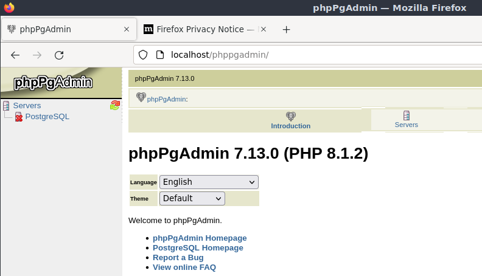
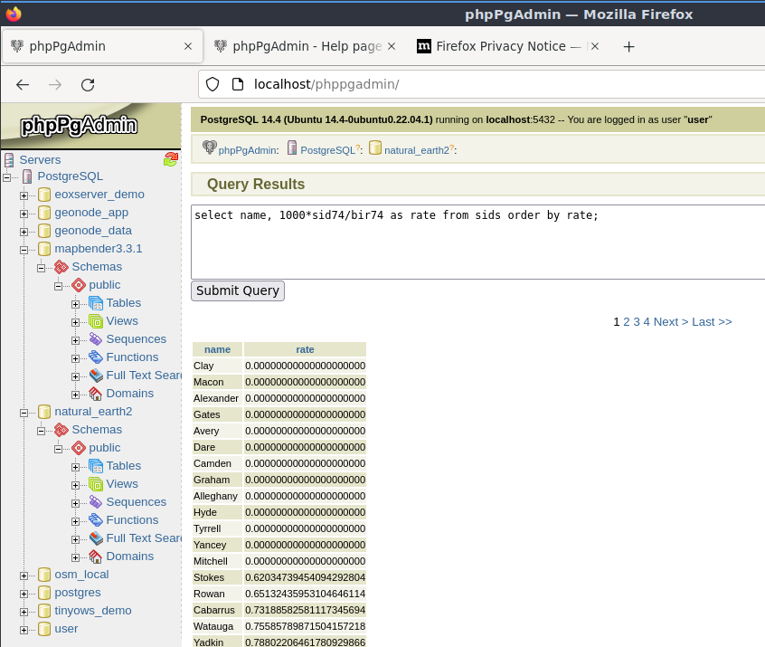

Guida rapida PostGIS¶
PostGIS aggiunge capabilities spaziali al database relazionale PostgreSQL. Estende PostgreSQL in modo che possa immagazzinare, interrogare e manipolare dati spaziali. In questo Quickstart useremo “PostgreSQL” quando descriveremo le funzioni generali del database, e “PostGIS” quando descriveremo le funzionalità spaziali aggiuntive fornite da PostGIS.
Questa Guida Rapida descrive come:
Crea e interroga un database spaziale da linea di comando e QGIS interfaccia grafica.
Gestire i dati dal client
pgAdmin
Architettura client-server¶
PostgreSQL, come molti database, funziona come un server in un sistema client-server. Il client fa una richiesta al server e riceve una risposta. Questo è lo stesso modo in cui funziona internet - il tuo browser è un cliente e un server web rimanda indietro la pagina web. Con PostgreSQL le richieste sono in linguaggio SQL e la risposta è di solito una tabella di dati dal database.
Non c’è nulla che impedisca al server di essere sullo stesso computer del client, e questo ti permette di usare PostgreSQL su una sola macchina. Il tuo client si connette al server tramite la connessione di rete interna “loopback”, e non è visibile agli altri computer a meno che tu non lo configuri.
Creare un database spaziale¶
I client a riga di comando vengono eseguiti da una finestra dell’Emulatore di Terminale.
Avvia un Emulatore di Terminale (attualmente LXTerminal) dal menu Applicazioni nella sezione Accessori. In questo modo si ottiene un prompt di comandi della shell Unix. Digita:
psql -V
e premi invio per vedere il numero di versione di PostgreSQL.
Un singolo server PostgreSQL permette di organizzare il lavoro organizzandolo in database separati. Ogni database è un regime indipendente, con le proprie tabelle, viste, utenti e così via. Quando ti connetti a un server PostgreSQL devi specificare un database.
Puoi ottenere una lista di database sul server con il comando:
psql -l
comando. Dovresti vedere diversi database usati da alcuni progetti nel sistema. Ne crei uno nuovo per questo quickstart.
Suggerimento
La lista usa un pager standard di Unix - premi spazio per la pagina successiva, b per tornare indietro, q per uscire, h per aiuto.
PostgreSQL ti dà un programma di utilità per creare database, createdb. Hai bisogno di creare un database prima di aggiungere le estensioni PostGIS. Chiama il tuo database demo. Il comando è quindi:
createdb demo
Suggerimento
Di solito puoi ottenere aiuto per gli strumenti a riga di comando usando l’opzione --help.
Se ora esegui psql -l dovresti vedere il tuo database demo nella lista. Non hai ancora aggiunto l’estensione PostGIS, ma nella prossima sezione imparerai come.
Puoi creare database PostGIS usando il linguaggio SQL. Prima cancelleremo il database che abbiamo appena creato usando il comando dropdb, poi useremo il comando psql per ottenere un interprete di comandi SQL:
dropdb demo
psql -d postgres
Questo si connette al database di sistema principale chiamato postgres. Ora inserisci l’SQL per creare un nuovo database:
postgres=# CREATE DATABASE demo;
Ora passa la tua connessione dal database postgres al nuovo database demo. In futuro potrai connetterti direttamente con psql -d demo, ma qui c’è un modo pulito di passare dalla linea di comando psql:
postgres=# \c demo
Suggerimento
Premere CTRL + C se il prompt di psql continua ad apparire dopo aver premuto return. Cancellerà il tuo input e ricomincerà. Probabilmente sta aspettando un virgolettato di chiusura, un punto e virgola, o qualcosa del genere.
Dovresti vedere un messaggio informativo e il prompt cambierà per mostrare che ora sei connesso al database demo.
Successivamente, aggiungi l’estensione PostGIS:
demo=# create extension postgis;
Per verificare che tu abbia postgis installato, esegui la seguente query:
demo=# SELECT postgis_version();
postgis_version
---------------------------------------
2.3 USE_GEOS=1 USE_PROJ=1 USE_STATS=1
(1 row)
PostGIS installa molte funzioni, una tabella e diverse viste
Digita \dt per elencare le tabelle nel database. Dovresti vedere qualcosa di simile a questo:
demo=# \dt
List of relations
Schema | Name | Type | Owner
--------+------------------+-------+-------
public | spatial_ref_sys | table | user
(1 row)
La tabella spatial_ref_sys è usata da PostGIS per la conversione tra diversi sistemi di riferimento spaziale. La tabella spatial_ref_sys memorizza informazioni sui sistemi di riferimento spaziali validi, e puoi usare un po” di SQL per dare un’occhiata veloce:
demo=# SELECT srid, auth_name, proj4text FROM spatial_ref_sys LIMIT 10;
srid | auth_name | proj4text
------+-----------+--------------------------------------
3819 | EPSG | +proj=longlat +ellps=bessel +towgs...
3821 | EPSG | +proj=longlat +ellps=aust_SA +no_d...
3824 | EPSG | +proj=longlat +ellps=GRS80 +towgs8...
3889 | EPSG | +proj=longlat +ellps=GRS80 +towgs8...
3906 | EPSG | +proj=longlat +ellps=bessel +no_de...
4001 | EPSG | +proj=longlat +ellps=airy +no_defs...
4002 | EPSG | +proj=longlat +a=6377340.189 +b=63...
4003 | EPSG | +proj=longlat +ellps=aust_SA +no_d...
4004 | EPSG | +proj=longlat +ellps=bessel +no_de...
4005 | EPSG | +proj=longlat +a=6377492.018 +b=63...
(10 rows)
Questo conferma che hai un database spaziale.
Oltre a questa tabella, troverai diverse viste create quando abiliti postgis nel tuo database.
Digita \dv per elencare le viste nel database. Dovresti vedere qualcosa di simile a questo:
demo=# \dv
List of relations
Schema | Name | Type | Owner
--------+-------------------+------+----------
public | geography_columns | view | postgres
public | geometry_columns | view | postgres
public | raster_columns | view | postgres
public | raster_overviews | view | postgres
(4 rows)
PostGIS supporta diversi tipi di dati spaziali:
geometry - è un tipo di dati che memorizza i dati come vettori disegnati su una superficie piana
geography - è un tipo di dati che memorizza i dati come vettori disegnati su una superficie sferoidale
- raster - è un tipo di dati che memorizza i dati come una matrice n-dimensionale dove ogni posizione (pixel) rappresenta
un’area di spazio, e ogni banda (dimensione) ha un valore per ogni spazio di pixel.
Le viste geometry_columns, geography_columns e raster_columns hanno il compito di dire a PostGIS quali tabelle hanno colonne PostGIS geometry, geography e raster.
Le panoramiche sono tabelle a bassa risoluzione per i dati raster. La tabella raster_overviews elenca tali tabelle e la loro colonna raster e la tabella di cui ciascuna è una panoramica. Le tabelle di riepilogo raster sono usate da strumenti come QGIS per fornire versioni a bassa risoluzione dei dati raster per un caricamento più veloce.
Il tipo PostGIS geometry è il primo e ancora il più popolare tipo usato dagli utenti di PostGIS. Concentrerai la tua attenzione su questo tipo.
Creare una tabella spaziale usando SQL¶
Ora che hai un database spaziale, puoi creare alcune tabelle spaziali.
Per prima cosa crea una normale tabella di database per memorizzare alcuni dati della città. Questa tabella ha tre campi - uno per un ID numerico che identifica la città, uno per il nome della città e un altro per la colonna della geometria:
demo=# CREATE TABLE cities ( id int4 primary key, name varchar(50), geom geometry(POINT,4326) );
Convenzionalmente questa colonna geometria si chiama geom (la vecchia convenzione PostGIS era the_geom). Questo dice a PostGIS che tipo di geometria ha ogni elemento (punti, linee, poligoni ecc.), quante dimensioni (in questo caso 2, se avesse 3 o 4 dimensioni useresti POINTZ, POINTM, o POINTZM), e il sistema di riferimento spaziale. Hai usato le coordinate EPSG:4326 per le tue città.
Ora se controlli la tabella delle città dovresti vedere la nuova colonna, ed essere informato che la tabella attualmente non contiene righe.
demo=# SELECT * from cities;
id | name | geom
----+------+----------
(0 rows)
Per aggiungere righe alla tabella usa alcune istruzioni SQL. Per ottenere la geometria nella colonna geometria usa la funzione PostGIS ST_GeomFromText per convertire da un formato testo che fornisce le coordinate e un id del sistema di riferimento spaziale:
demo=# INSERT INTO cities (id, geom, name) VALUES (1,ST_GeomFromText('POINT(-0.1257 51.508)',4326),'London, England');
demo=# INSERT INTO cities (id, geom, name) VALUES (2,ST_GeomFromText('POINT(-81.233 42.983)',4326),'London, Ontario');
demo=# INSERT INTO cities (id, geom, name) VALUES (3,ST_GeomFromText('POINT(27.91162491 -33.01529)',4326),'East London,SA');
Suggerimento
Usare i tasti freccia per richiamare e modificare le linee di comando.
Come puoi vedere questo diventa sempre più noioso molto rapidamente. Fortunatamente ci sono altri modi per ottenere dati nelle tabelle PostGIS che sono molto più semplici. Ma ora hai tre città nel tuo database, e puoi lavorare con quello.
Interrogazioni semplici¶
Tutte le solite operazioni SQL possono essere applicate per selezionare i dati da una tabella PostGIS:
demo=# SELECT * FROM cities;
id | name | geom
----+-----------------+----------------------------------------------------
1 | London, England | 0101000020E6100000BBB88D06F016C0BF1B2FDD2406C14940
2 | London, Ontario | 0101000020E6100000F4FDD478E94E54C0E7FBA9F1D27D4540
3 | East London,SA | 0101000020E610000040AB064060E93B4059FAD005F58140C0
(3 rows)
Questo ci dà una versione esadecimale codificata delle coordinate, non così utile per gli umani.
Se vuoi dare un’occhiata alla tua geometria in formato WKT, puoi usare le funzioni ST_AsText(geom) o ST_AsEwkt(geom). Puoi anche usare ST_X(geom), ST_Y(geom) per ottenere il valore numerico delle coordinate:
demo=# SELECT id, ST_AsText(geom), ST_AsEwkt(geom), ST_X(geom), ST_Y(geom) FROM cities;
id | st_astext | st_asewkt | st_x | st_y
----+------------------------------+----------------------------------------+-------------+-----------
1 | POINT(-0.1257 51.508) | SRID=4326;POINT(-0.1257 51.508) | -0.1257 | 51.508
2 | POINT(-81.233 42.983) | SRID=4326;POINT(-81.233 42.983) | -81.233 | 42.983
3 | POINT(27.91162491 -33.01529) | SRID=4326;POINT(27.91162491 -33.01529) | 27.91162491 | -33.01529
(3 rows)
Interrogazioni spaziali¶
PostGIS aggiunge molte funzioni con funzionalità spaziali a PostgreSQL. Hai già visto ST_GeomFromText che converte WKT in geometria. La maggior parte di esse inizia con ST (per tipo spaziale) e sono elencate in una sezione della documentazione di PostGIS. Ora ne userai una per rispondere a una domanda pratica - quanto distano queste tre Londra l’una dall’altra, in metri, assumendo una terra sferica?
demo=# SELECT p1.name,p2.name,ST_DistanceSphere(p1.geom,p2.geom) FROM cities AS p1, cities AS p2 WHERE p1.id > p2.id;
name | name | st_distancesphere
-----------------+-----------------+--------------------
London, Ontario | London, England | 5875766.85191657
East London,SA | London, England | 9789646.96784908
East London,SA | London, Ontario | 13892160.9525778
(3 rows)
Questo ti dà la distanza, in metri, tra ogni coppia di città. Nota come la parte “WHERE” della linea ti impedisce di ottenere le distanze di una città da se stessa (che saranno tutte pari a zero) o le distanze inverse a quelle della tabella precedente (London, England to London, Ontario è la stessa distanza di London, Ontario to London, England). Prova senza la parte “WHERE” e vedi cosa succede.
Puoi anche calcolare la distanza usando uno sferoide usando una funzione diversa e specificando il nome dello sferoide, l’asse semi-maggiore e i parametri di appiattimento inverso:
demo=# SELECT p1.name,p2.name,ST_DistanceSpheroid(
p1.geom,p2.geom, 'SPHEROID["GRS_1980",6378137,298.257222]'
)
FROM cities AS p1, cities AS p2 WHERE p1.id > p2.id;
name | name | st_distancespheroid
-----------------+-----------------+----------------------
London, Ontario | London, England | 5892413.63776489
East London,SA | London, England | 9756842.65711931
East London,SA | London, Ontario | 13884149.4140698
(3 rows)
Per uscire dalla riga di comando di PostgreSQL, inserire:
\q
Ora sei tornato alla console di sistema:
user@osgeolive:~$
Mappatura¶
Per produrre una mappa dai dati PostGIS, hai bisogno di un client che possa arrivare ai dati. La maggior parte dei programmi GIS desktop open source possono farlo - QGIS, gvSIG, uDig per esempio. Ora ti mostrerò come fare una mappa da QGIS.
Avvia QGIS dal menu Desktop GIS e scegli Aggiungi layer PostGIS dal menu dei layer. I parametri per la connessione ai dati di Natural Earth in PostGIS sono già definiti nel menu a tendina Connessioni. Qui puoi definire nuove connessioni al server e memorizzare le impostazioni per richiamarle facilmente. Clicca sul menu a tendina Connessioni e scegli Natural Earth. Premi Modifica se vuoi vedere quali sono questi parametri per Natural Earth, o premi semplicemente Connetti per continuare:

Ora otterrai un elenco delle tabelle spaziali nel database:

Scegliere la tabella ne_10m_lakes e premere Add in basso (non Load in alto - che carica i parametri di connessione al database), e dovrebbe essere caricata in QGIS:

Ora dovresti vedere una mappa dei laghi. QGIS non sa che sono laghi, quindi potrebbe non colorarli di blu per te - usa la documentazione di QGIS per capire come cambiare questo. Ingrandisci un famoso gruppo di laghi in Canada.
Importare dati spaziali nel database¶
La maggior parte degli strumenti desktop OSGeo hanno funzioni per importare dati spaziali da altri formati (ad es. ESRI Shape) nel database. Ancora una volta userai QGIS per mostrare questo.
L’importazione di shapefiles in QGIS può essere fatta tramite il pratico QGIS Database Manager. Trovi il manager nel menu. Vai a Database -> DB Manager.
Distribuisce l’oggetto Postgis, poi l’oggetto NaturalEarth. Si collegherà quindi al database di Natural Earth. Lascia la password in bianco se te lo chiede. Nella voce pubblica, c’è l’elenco dei layer forniti dal database. Vedrai la finestra principale del gestore. Sulla sinistra puoi selezionare le tabelle dal database e usare le schede sulla destra per scoprirle. La scheda Anteprima ti mostrerà una piccola mappa.

Ora userai il DB Manager per importare uno shapefile nel database. Userai i dati della sindrome della morte improvvisa del neonato (SIDS) della Carolina del Nord che sono inclusi in uno dei componenti aggiuntivi del pacchetto di statistiche R.
Dal menu Tabella scegli l’opzione Importa layer/file. Premi il pulsante ... e cerca lo shapefile sids.shp nella directory di R. (situato in /home/user/data/vector/R/shapes):

Lascia tutto il resto com’è e premi Carica.

Lascia che il selettore del sistema di riferimento delle coordinate sia predefinito su (WGS 84 EPSG:4326) e premi OK. Lo shapefile dovrebbe essere importato in PostGIS senza errori. Chiudi il DB Manager e torna alla finestra principale di QGIS.
Ora carica i dati della SIDS nella mappa usando l’opzione “Aggiungi Layer PostGIS”. Con un po” di riordino dei layer e qualche colorazione, dovresti essere in grado di produrre una mappa coropleta dei conteggi della sindrome della morte improvvisa del lattante (campi sid74 o sid79) in North Carolina:

Avvertimento
A seconda della versione di OSGeoLive utilizzata (ISO o VMDK), non saranno disponibili gli stessi client. pgAdmin è il client ufficiale per PostgreSQL, tuttavia, per motivi tecnici, non può essere presente nella ISO, quindi è disponibile solo nella versione VMDK. La versione ISO ha il client phpPgAdmin che offre le stesse funzionalità di base.
Conoscere phpPgAdmin (ISO e VMDK)¶
In both versions, you can use the graphical database client phpPgAdmin.
phpPgAdmin consente di utilizzare SQL per manipolare le tabelle di dati. È possibile trovare e lanciare phpPgAdmin dalla cartella Databases, presente sul Desktop di OSGeoLive.
{kind=link}
Qui si ha la possibilità di creare una nuova connessione a un server PostgreSQL o di connettersi a un server esistente. La «X» rossa sul server PostgreSQL indica che non si è ancora connessi. Fare clic su di essa e inserire il nome utente user e la master password user.
Dopo aver stabilito la connessione, puoi vedere l’elenco dei database già esistenti nel sistema.
{kind=link}
A questo punto è possibile vedere solo i database esistenti nel sistema. È possibile connettersi facendo clic sul segno più a sinistra del nome di un database. Fatelo per il database natural_earth2.
Ora si può vedere che c’è un solo schema in questo database, chiamato public. Facendo clic sul più a sinistra di ``Tabelle”” per espanderlo, si possono vedere tutte le tabelle contenute in questo schema.
{kind=link}
Esecuzione di una interrogazione SQL da phpPgAdmin (ISO e VMDK)¶
phpPgAdmin offre la possibilità di eseguire interrogazioni in un database relazionale.
Per eseguire una interrogazione sul database, clicca nuovamente sul database natural_earth2 e poi premi il pulsante SQL dalla barra degli strumenti principale (quello a sinistra con il simbolo del database).
Troverai il tasso di SIDS sulle nascite per il 1974 per ogni città. Inoltre ordinerai il risultato in base al tasso calcolato. Per fare ciò, devi eseguire la seguente query (presentarla nell’editor di testo della finestra SQL):
select name, 1000*sid74/bir74 as rate from sids order by rate;
Successivamente, si deve premere il pulsante Execute.
{kind=link}
Conoscere pgAdmin (solo VMDK)¶
Puoi usare il client grafico del database pgAdmin dal menu Database per interrogare e modificare il tuo database in modo non spaziale. Questo è il client ufficiale per PostgreSQL.
pgAdmin ti permette di usare SQL per manipolare le tue tabelle di dati. Puoi trovare e lanciare pgAdmin dalla cartella Databases, esistente sul desktop di OSGeoLive.

Inserire la password principale user.
Qui hai la possibilità di creare una nuova connessione a un server PostgreSQL o di connetterti a un server esistente. In questo caso, ci connetteremo al server predefinito localhost.
Dopo aver stabilito la connessione, puoi vedere l’elenco dei database già esistenti nel sistema.

La «X» rossa sull’immagine della maggior parte dei database, denota che non sei stato ancora connesso a nessuno di essi (sei connesso solo al database predefinito postgres). A questo punto sei in grado di vedere solo i database esistenti sul sistema. Puoi connetterti cliccando due volte sul nome di un database. Fallo per il database natural_earth2.
Ora puoi vedere che la X rossa è scomparsa e un «>» è apparso sulla sinistra. Premendolo apparirà un albero che mostra il contenuto del database.
Naviga al sottoalbero schemi, espandilo. Poi espandi lo schema public. Navigando ed espandendo le Tables, puoi vedere tutte le tabelle contenute in questo schema.

Esecuzione di una interrogazione SQL da pgAdmin (solo VMDK)¶
pgAdmin offre la possibilità di eseguire query a un database relazionale.
Per eseguire una query sul database, devi premere il pulsante Query Tool dalla barra degli strumenti principale (quella a sinistra con il simbolo del database).
Troverai il tasso di SIDS sulle nascite per il 1974 per ogni città. Inoltre ordinerai il risultato in base al tasso calcolato. Per fare ciò, devi eseguire la seguente query (presentarla nell’editor di testo della finestra SQL):
select name, 1000*sid74/bir74 as rate from sids order by rate;
Successivamente, si dovrebbe premere il pulsante freccia che punta a destra (Eseguire).

Conoscere i Foreign Data Wrappers (FDW)¶
Dal tuo database puoi accedere a oggetti remoti come tabelle da altri database PostgreSQL o connetterti a database remoti come Oracle, MySQL, MS SQL o CouchDB. È anche possibile connettersi via ODBC, connettersi a CSV, dati geospaziali e persino a Twitter.
Si trova una lista di diversi FDW all’indirizzo:
Vedi come funziona! Il modo più semplice è quello di connettersi a un altro database PostgreSQL.
Ecco i passaggi:
Prima carica l’estensione per il Foreign Data Wrapper che vuoi usare. Per una connessione a un altro database PostgreSQL hai bisogno di postgres_fdw.
CREATE EXTENSION postgres_fdw;
Crea un Server «foreign» che dica dove trovare l’origine dati che si vuole connettere
CREATE SERVER fdw_pg_server_osm_local
FOREIGN DATA WRAPPER postgres_fdw
OPTIONS (host '127.0.0.1', port '5432', dbname 'osm_local');
Definisci l’utente che dovrebbe essere usato quando ci si connette al server foreign
CREATE USER MAPPING FOR user
SERVER fdw_pg_server_osm_local
OPTIONS (user 'user', password 'user');
Ora puoi creare una tabella foreign.
IMPORT FOREIGN SCHEMA public
LIMIT TO (planet_osm_polygon, planet_osm_point) -- or EXCEPT
FROM SERVER fdw_pg_server_osm_local
INTO public;
Trova nuove tabelle nel tuo database e dai un’occhiata ai dati di una tabella foreign.
Select * from planet_osm_polygon limit 10;
Connettersi a un’origine dati OGR remota tramite ogr_fdw¶
L’estensione ogr_fdw permette di collegare anche diversi formati di geodati come KML, GeoPackage, WFS, GeoJSON, GPX, GML e altri.
Leggi di più su ogr_fdw:
Repository: https://github.com/pramsey/pgsql-ogr-fdw
Nuovo e migliorato: http://blog.cleverelephant.ca/2016/04/ogr-fdw-update.html
Installa l’estensione ogr_fdw nel tuo database.
Sul prompt del database digita:
CREATE EXTENSION ogr_fdw;
Verifica quali formati sono supportati:
Apri un terminale e cerca ogr_fdw_info:
locate ogr_fdw_info
/usr/lib/postgresql/10/bin/ogr_fdw_info -f
I risultati potrebbero essere come questi:
Supported Formats:
-> "OGR_GRASS" (readonly)
-> "PCIDSK" (read/write)
-> "netCDF" (read/write)
-> "JP2OpenJPEG" (readonly)
-> "PDF" (read/write)
-> "MBTiles" (read/write)
-> "EEDA" (readonly)
-> "ESRI Shapefile" (read/write)
-> "MapInfo File" (read/write)
.... many more
Crea un FDW per un WFS
Avvia Geoserver via
Open GeoServer http://localhost:8082/geoserver/web/
GeoServer WFS GetCapabilities http://localhost:8082/geoserver/ows?service=wfs&version=2.0.0&request=GetCapabilities
GeoServer WFS DescribeFeatureType for topp:states http://localhost:8082/geoserver/ows?service=wfs&version=2.0.0&request=DescribeFeatureType&typename=topp:states
GeoServer WFS GetFeature topp:states http://localhost:8082/geoserver/ows?service=wfs&version=2.0.0&request=GetFeature&typename=topp:states
Crea un server foreign che si riferisce al WFS che si vuole connettere
CREATE SERVER fdw_ogr_server_wfs
FOREIGN DATA WRAPPER ogr_fdw
OPTIONS ( datasource 'WFS:http://localhost:8082/geoserver/ows', format 'WFS' );
Importa tutti i feature_types WFS come tabelle foreign con un solo comando.
Dopo l’importazione vedrai diverse nuove tabelle foreign nel tuo schema.
IMPORT FOREIGN SCHEMA ogr_all
FROM SERVER fdw_ogr_server_wfs
INTO public;
Ispeziona la tabella dei dati foreign topp_states:
SELECT * FROM topp_states WHERE state_name = 'Minnesota';
Cose da provare¶
Ecco alcune sfide aggiuntive da provare:
Prova alcune altre funzioni spaziali come
st_buffer(geom),st_transform(geom,25831),st_x(geom)- troverai la documentazione completa su http://postgis.net/documentation/Esporta le tue tabelle in shapefiles con
pgsql2shpsulla linea di comando.Prova
ogr2ogrsulla linea di comando per importare/esportare dati nel tuo database.Prova a importare i dati con
shp2pgsqlsulla linea di comando nel tuo database.Prova ad eseguire routing stradale usando pgRouting.
E ora?¶
Questo è solo il primo passo sulla strada per usare PostGIS. Ci sono molte altre funzionalità che puoi provare.
Sito web del Progetto PostGIS - http://postgis.net
PostGIS Documentazione - http://postgis.net/documentation/